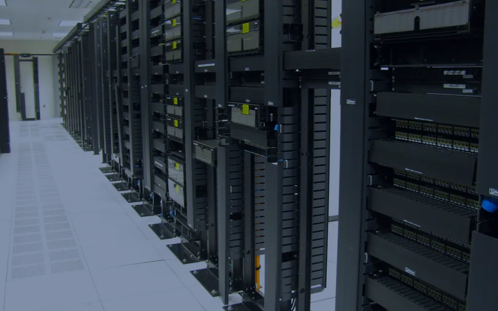
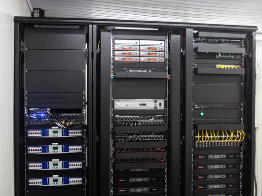
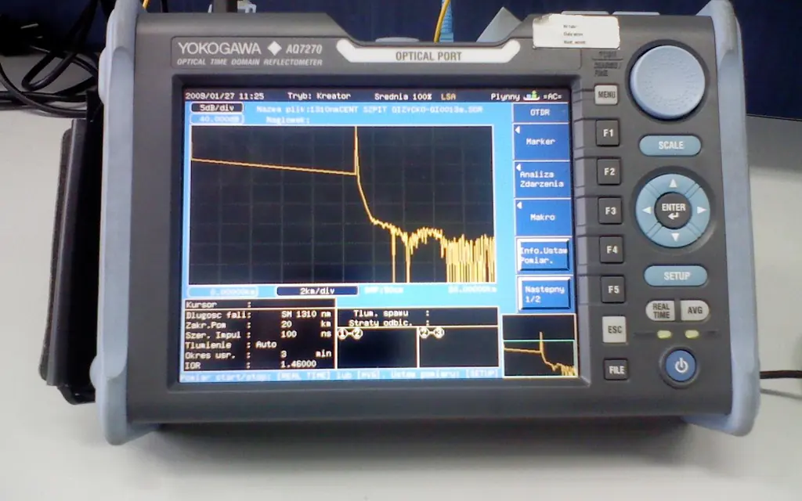
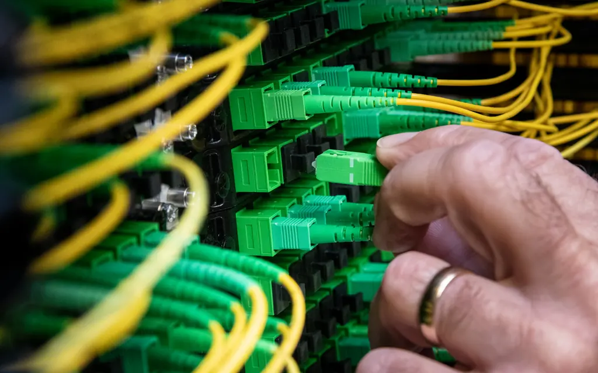
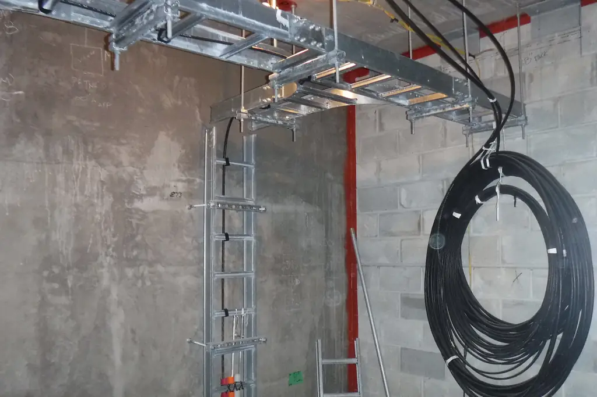

Structured cabling · Data center fiber
Structured Cabling & Data Center Fiber
Copper and fiber cabling built clean, labeled and tested, from a single office floor to a full data center. Related work: fiber splicing and testing and outside-plant fiber.
Headquartered in Texas · IT integration and low voltage services nationwide
NationwideHeadquartered in Texas
40+ yearsCombined field experience
BICSIExperienced field technicians
What's included
Cabling you never have to think about again.
Good cabling is invisible: it works, it is easy to trace, and the next person who opens the rack can tell what goes where.
- Cat6 and Cat6A copper to desks, access points, cameras and devices
- Fiber backbones between the MDF, IDFs and buildings
- Racks, cabinets, ladder rack and cable management
- Patch panels, terminations and clean cable dressing
- Labels on every cable, panel and port
- Every run tested, with the results handed over
- As-built documentation at handoff
- Moves, adds and changes on existing systems

Where we do it
From one office to a full data center.
- OfficesFloors, conference rooms and front desks.
- Warehouses and distributionLong runs to access points, cameras and scanners.
- Data centersDense fiber and copper in rows, racks and cages.
- HealthcareClinics and hospitals, worked around patients and staff.
- GovernmentCity and county buildings.
- AirportsTerminals and back-of-house spaces.

How it runs
Four steps, one point of contact.
- Walk the siteWe look at the rooms, pathways and equipment areas, or start from your drawings.
- Scope and quoteA clear list of what gets installed, where, and what it costs.
- Install, label, dressClean runs, tidy racks and a label on everything, with a project manager as your one contact.
- Test and hand offEvery run tested. You get the results and the as-builts.
Questions
Structured cabling FAQ.
- Do you work in existing buildings or only new construction?
- Both. We handle new builds, refreshes, and moves, adds and changes on systems that are already in place.
- What kind of cable do you install?
- Copper (Cat6 and Cat6A) and fiber, matched to what your design or equipment calls for.
- Is the cabling tested?
- Yes. Every run is tested, and the results are part of the handoff.
- Do you work outside Texas?
- Yes. We are headquartered in Texas and work on projects nationwide.
Related services
Often part of the same project.

Fusion Splicing & Fiber Testing
Splicing, termination and testing of your fiber.Explore this service →
Outside-Plant Fiber
Fiber between buildings, with route, permit and right-of-way handled.Explore this service →
Network Engineering & Design
Network design, Cisco and Meraki installs and refreshes.Explore this service →
Next step
Ready to talk about your cabling project?
Request a site survey or a consultation and we will get back to you.